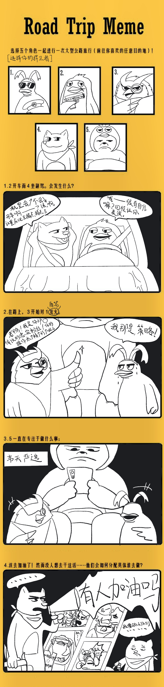
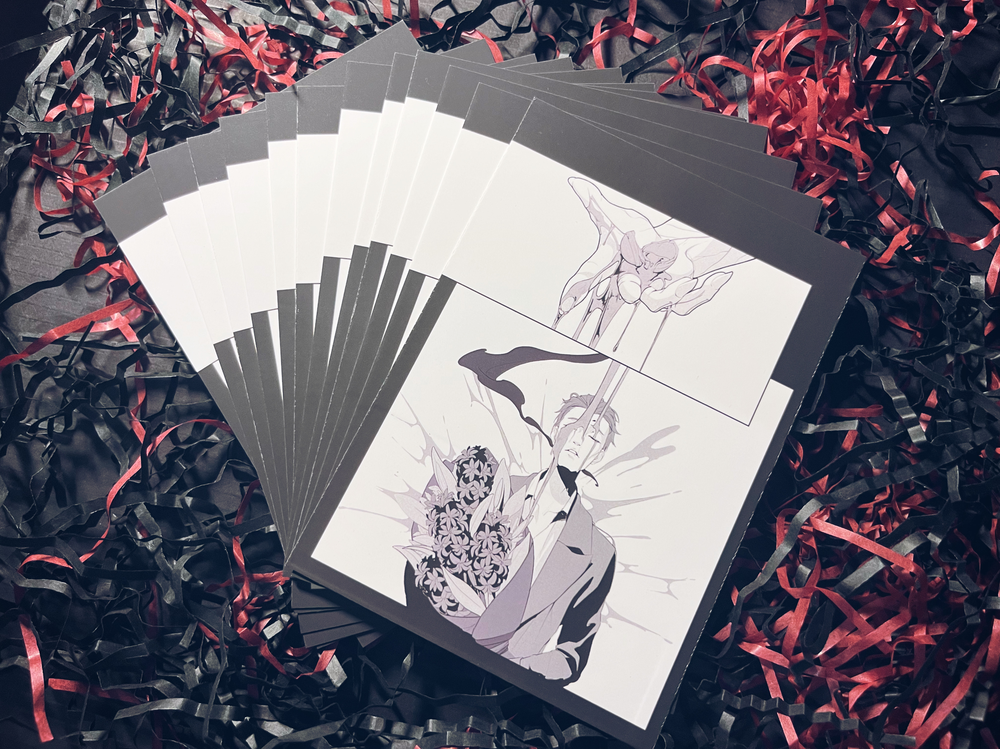
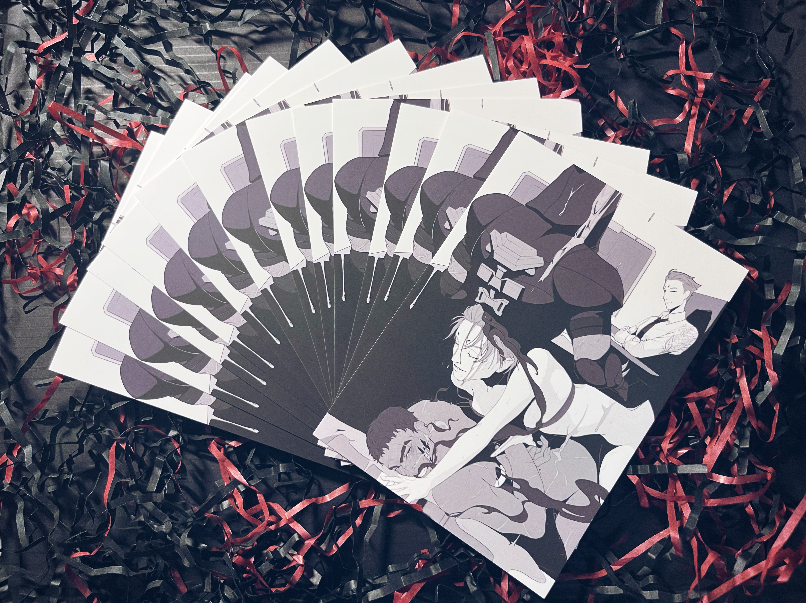
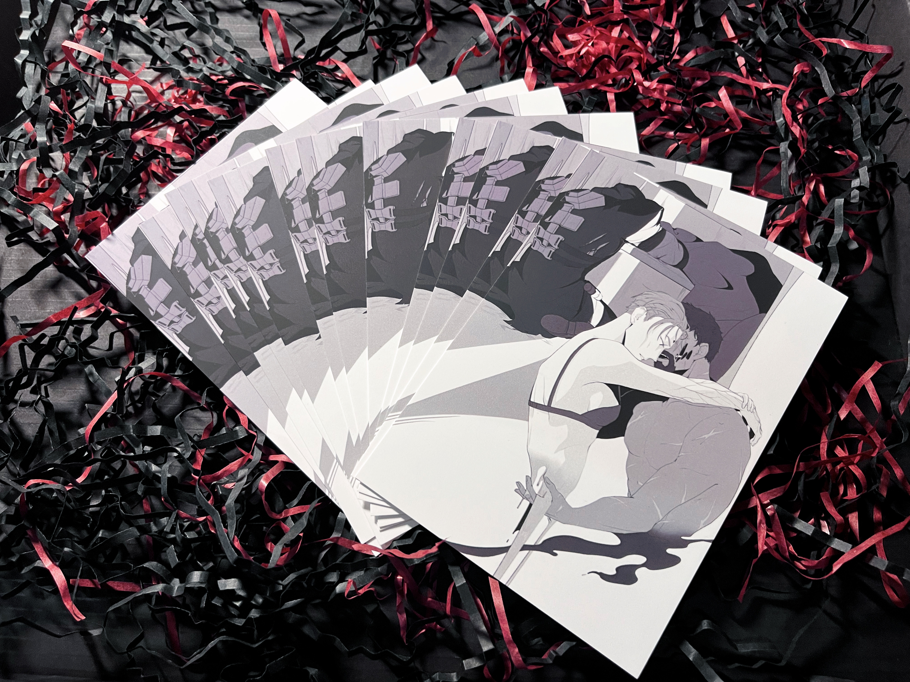
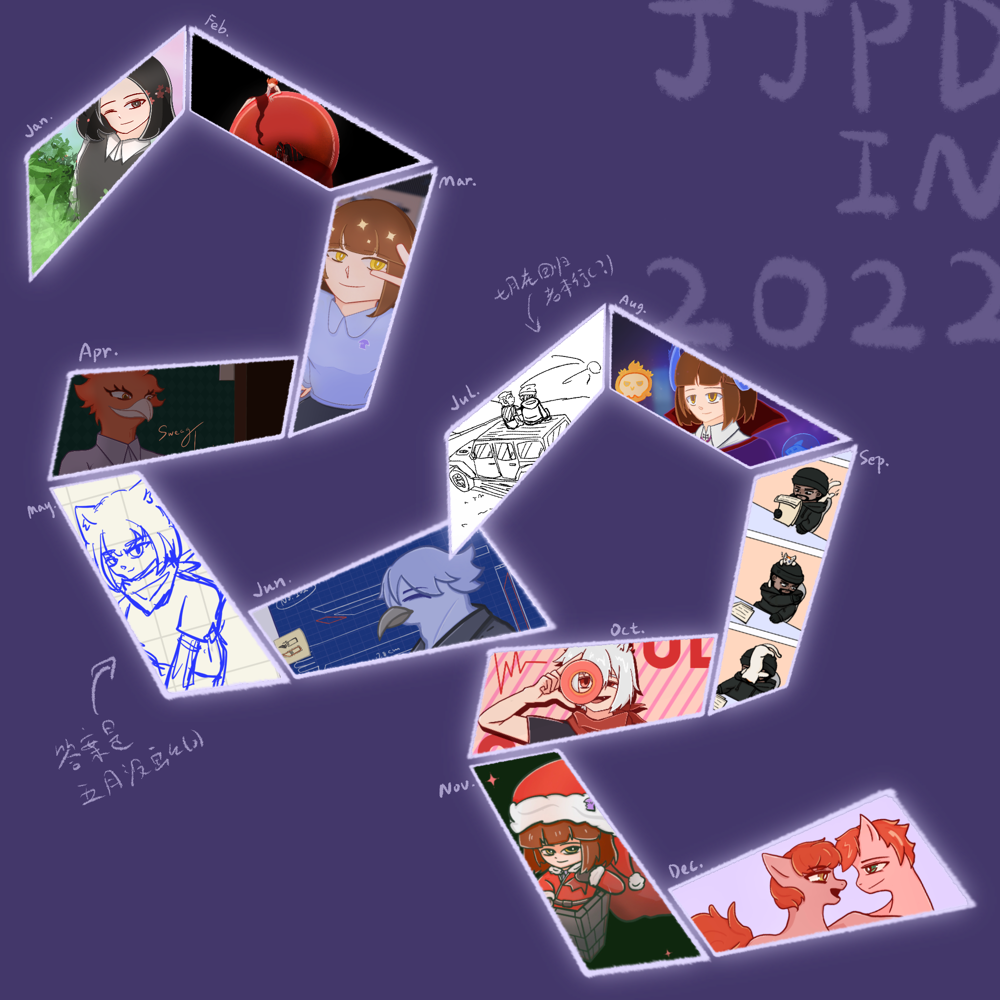
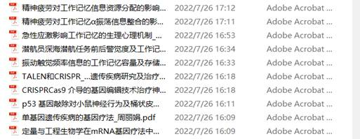
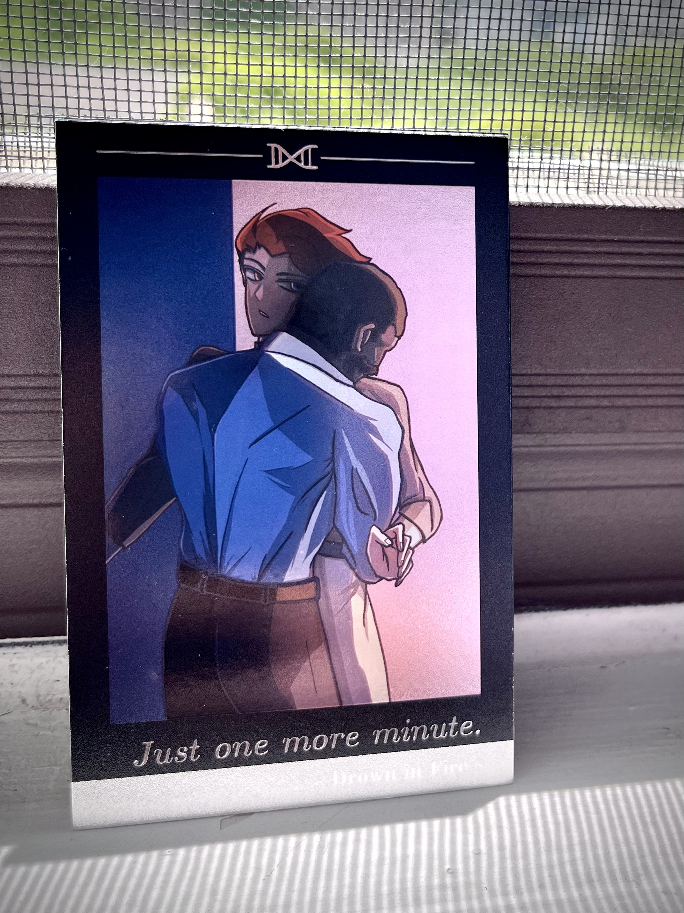

这里是因为建站2周年+1.0有点太长所以新开的2.0 1.0走这里
什么发言都会有的混沌火锅（
1
双子好好啊……好喜欢
一路走来真的成长了好多呜呜
麦老师写的双子是神迹……
2
Xek为什么是神
翻到前两年的截图 再看一遍还是心灵震颤
太会写了……
3
五百年了设定集终于到了 感动
ow的美术真的好牛……没有办法拒绝……
看看你最近出的都是什么东西（骂骂咧咧
姨的触手废稿好香 呃呃 喜欢…… 高清大图看得好爽……
scientist原画好好看！！！！！！以后约稿有详细参考了好耶（
我是真的很喜欢莫姨右手的设定……
story部分四舍五入是我cp相遇重逢轨迹再现 听我说谢谢你（开始了
只能说jjpd被我cp套牢 笑了
顺便 24原画和建模是两个人吧大概 我嫌弃这个皮建模师占主要责任（对不起
又 经典ow笑话 之 ow2内容抢先看 之 只有一页 之 只有建模和原画 之 只有两个角色
真的会被笑到 谢谢 内容太丰富了（棒读
4
话说ow2上线真就不做pve 彳亍 我预言成功了 哈哈
ow2又称（jjpd称）小光环无限（
反正 没有pve 这游戏 基本就和我没啥关系（
5
听我妈锐评ow众人真的很好笑
sombra：看起来有点憨憨的 我：？
百合：虽然长这样 但应该是好人 我：？
爹：好凶 最不好看的一个吧大概 我：乐
实不相瞒 啊 这人是你女儿首推 哈哈
那 没办法 jjpd多少有一些面具人xp在里面
笑死
6
每逢期末必反刍
jjpd终于领悟 如果不多写点 最后会被饿死的只有自己
只能说jjpd就是周期性仰卧起坐
那既然都有高清大图了 我不写点触手普雷之类的东西不是血亏（
7
小组作业写出了餐馆点菜的感觉
吃不饱再加菜 我已经领悟了
8
感觉我cp在我这已经只剩下三种形态了
要不然就是 虽然啥都干过但是很假 要不然就是啥都没干过所以很假 再不然就是来搞笑的（
只能说 我当时会磕上他俩 里面的确有一部分搞笑因素
那 真的很好笑啊 没有办法
9
回顾了一下jjpd去年的口嗨历程 只能说 糖分真的有点过高
去年：个大饱满有水分 随便拿甜度计一测都是2324往上
今年：小个干瘪 还都酸了吧唧 又苦又涩
发生了什么 我也不好说（
10
我要是会画画 早就给我cp画one last kiss手书了 可恶
那真的很合适 没有办法
11
画了猛男寨公路旅行meme 我自己觉得还蛮好笑的
顺序是随机数投出来的 只能说都是命（

12
有点心动cpo 虽然我觉得铁定没人来 啊 但还是心动（
看看 要是我 能把哨向写完 就来
五百年了 真的能写完吗 其实我不信
13
看了眼 啊 两年前的今天我打了草稿
到现在还没写完
乐
14
好 果然没写完（
但无论如何我要给自己一个交代（
15
忍不住把ai2通了 好好玩好喜欢 好久没有这么快乐地玩游戏了 上一回还是6.0（
我真的很喜欢叙诡和meta要素（……
龙环是真的 女儿们好可爱 瑞希我的铁人
结局演出真的好乐我笑死了 满脑子复联bgm（对不起
不管别人评价如何 反正我玩得很爽
16
jjpd就是突出一个人菜瘾大
明明自己不能喝却一直想学调酒 怎么回事
而且还把这种执念加到了我cp身上 最明显的体现就是不管什么世界观我cp两个人各自的家里一定会有一个吧台和酒柜（
我早晚要写一次调酒梗 真的很想看姨给爹递来一杯corpse reviver的场景（真的是粉
好想喝酒呃呃 为什么我喝不了呃呃
17
jjpd果然只有在推主线（？）的时候才不会废话
写出了自己很喜欢的场景 要是我能整出来 我就去约稿（开始了
快开学啊我要印本发货呃呃呃
虽然但是 现在这情况 我不好说 不好说……
18
我是真的很喜欢看那种 失去一切的爹向姨寻求一些他明知道无法得到的依赖的场景
并不是说姨是他可以依靠的人 而是在这个时候 除了姨以外他已经没有任何人能够依赖了 她是唯一一个知道他干了什么 见证了这一切 同时又处在他能够接触到的距离的人
就虽然这么看我cp真的很假 但 jjpd就好这口……
我真的很想看那种 满身裂痕的爹在姨面前半被迫地卸下外壳露出内在的血肉的场景（开始抽象
我觉得就是和螃蟹换壳一个道理 其实很危险 很有可能一个不小心就崩溃寄了（
事实是我觉得换其他任何人来都会是一个修复裂痕然后爹主动敞开心扉的剧情 到我cp 我满脑子只剩下姨拿着撬棍把门撬开的场景（对不起
jjpd的口味真的很奇怪…… 但我就是觉得我cp反而因为这一点才看上去很真（啊？
19
看尼玩tr看得我泰瘾犯了（
该盖小喷菇了（
20
小秦的二创一致都是jk设定这一点不管想起多少次都很好笑又震撼（
但是又很合理 怎么回事呢
21
jjpd的脑回路真的很奇怪
明明在写的是我cp 却总是忍不住去想一些会让我cp变得非常假的背景设定
打扰了
22
感觉 这篇如果真的能写完 最后会需要列一个参考文献
工作记忆这个大脑机制就是哨向的核心原理吧（确信
让我学学 让我编编
这么一看感觉现实的大脑机制更抽象了 记忆提取期 好抽象啊！
23
感动！终于写到终章了！终于！
恭喜我cp在jjpd手里终于双向明示了一次 哦灭得多👏👏👏
不容易 不容易
这波是爹超级直球上大分之轮流大脑宕机 对不起 我真的很喜欢看这种俗俗的纯爱剧情
24
等我写完我就要去找老师约稿 我好饿
真的很满意这种确实发生了点什么但又什么都没发生但某种意义上来说的确有微妙影响的情节（到底在说什么
25
修改好痛苦 我写的都是什么玩意
关键是我还不知道该怎么改
点点点
26
一直约稿一直爽
我快乐就完事了
27
虽然实体寄了 但在这种痛苦中我反而代到了我cp 怎么回事……
塞翁失马焉知非福吧大概
真的会 想要寻求一个 无法得到的答案
我就是爹爹就是我（开始了
28
怎么会有人搞cp搞到一半被自己的描写蛊到然后开始羡慕其中一方啊 点点点
首先 我不是梦女 但是 我真的好羡慕爹啊可恶呃呃呃呃
对不起 就 我也不知道为什么（
笑了
29
是谁 在写自家cp关门办事的时候 发现自己也被关在了外面啊
噢 原来是我
对不起 我知道这话听起来真的非常奇怪 但我确实觉得 jjpd有一瞬间就看着门在自己眼前上了锁（
如果用更奇怪一点的说法的话 就是 爹关门就是为了把jjpd关在外面
打扰了 为什么会变成这样
30
历时半年 jjpd终于摸到了明信片 放放实物图



虽然我还是有点 分不清触感膜和哑膜到底有什么区别 虽然实际上手的手感也没有那么会引发联想 但基本上还是达到了我想要的效果 可喜可贺
总之 因为吃不到假的糖 所以就拿真的糖代餐一下（
不是铁锈味的，请放心食用:)
31
当你发现自己和约稿老师同城（
怎么说 也不能算概率特别低 但就是 啊 怎么会这么巧（
32
总之恭喜我cptag上50 虽然第五十篇不是我（在争什么
怎么我一不看tag就都出来做饭了（
亲友评论：冷圈美杜莎吧大概
我觉得这话很有道理
虽然你kudos很多 看着感觉很香 但是有拆家tag 所以我还是算了（
无法和解 虽然我cp是假的但我不能接受（
33
顺着别人的bookmark翻到了一篇没打relationship tag的神级同人 两年前的饭 好香 好香
好久不见洋妞写假到爆炸的俩人了 看得我满地乱爬打滚哀嚎
真的好假啊我操……但就是在这种情况下，反而，开始，吐露真心
就 omg……说不出话
就 因为对方开始体验和自己一样的痛苦了 她开始能够 真正 怎么说 理解自己了 所以 虽然嘴上各种冷嘲热讽阴阳怪气 虽然他仍然充满着痛苦愤怒甚至于怨恨 但反而 他终于能够 对她 说出 自己真实的感受 那些过往困扰折磨他的痛苦 自己经历的那些事
未尝不是一种展示真实的自己（
而且就 虽然 爹真的在这篇里非常之凶 但 在这种心理下 这种表现真的给我一种 怎么说 因为这是唯一的办法所以有种抓住最后稻草的挣扎感（在说什么
因为对彼此的态度已经不会再因为什么而改变了 所以 也不会顾忌什么（
事实是我真的觉得爹揪着姨的衣领把对方摁在墙上然后低吼“Fucking. Fix. Me.”的场景 很像 一款 让对方对自己负责的情节（……
对不起……
而且我确实觉得爹会在姨面前发疯（？） 或者换句话说 也只会在姨面前发疯（开始了
就 还是那句话 是只有他们两个能够理解的东西 不能算是秘密 但别人的确不懂 也无法解决
就 好假 好真（
34
只能说 在写哨向的时候 jjpd真的很努力地让他俩的行为变得合理可行（
总是在一些莫名其妙的地方追求真实感 比如 如何爬上越野车的车顶（
谢谢你 jeep官网 我会在ft里提到你的（
35
想起年初某次和亲友聊到 关于r真的很像乌鸦这件事
越想越合理 想画儿童画
但感觉这 工作量 还蛮大的 有缘再说吧（
36
被橙流麻迷了心窍……好适合啊我好想做但是我做那么多干嘛啊……
其实做彩窗也是一个思路 让我学一学怎么做文件
jjpd失了智
37
jjpd久违地又被自己甜到了 没想到2022年我还能写出这么纯爱的情节
感叹
38
怎么会有人搞cp搞到开始磕自设水仙啊 无语了
但是没有办法
jjpd总得给自己找个依靠 不然搞不下去的
39
开始补高达 看完独角兽再去看0079和z真的好那个啊……唉……
好惨 好惨 感觉就是大家都很惨
newtype的设定真的好……又让人悲伤又很温柔的感觉（开始抽象
我是真的很喜欢看老角色续作再登场
有德我的修正达人 虽然我没有看剧透但根据各类弹幕语气感觉我去看哈撒维的时候会非常痛苦面具（
但是独角兽真的好帅啊……好美丽好喜欢我的老婆（开始了
动了买胶的念头 但我觉得我能不能拼起来还是一个问题（
40
jjpd开始约稿上头
冷静一点 不然你就没钱搞dif了（
calm down
41
虽然我说不要动搞rps的念头会变得不幸
但是
算了我闭嘴了 总感觉我又是一眼盯上了超级冷门
而且这俩人 现实中本来就有点问题 这鬼才有人搞（
42
一直约稿一直爽 我要做周边 我做我做
其实pr也是一款 我cp代餐（啊？
43
圆梦项圈梗了 我好爽
老师好会画 好好看 qq人嘿嘿……
希望能实现我想要的效果
44
关于我在舍友和我的一些突发对谈中狠狠代到这件事
就 我不好说在代什么 但确实 很能代
45
ow2要上了 和我 其实 也没什么关系
我就等一个语音整理 暴雪不要背刺我 谢谢
我cp可以假 但是对家不许真（
and 姨的新皮 属于是一款 scientist特化 jjpd的xp大满足（
我真的好喜欢姨右臂的设计 就 很 姨（在说什么
不过 仔细想想 要是姨是因为右臂正常穿着会不适才把制服改成了这个设计 那不是更好了.jpg
suki……
不过 姨的新衣服真的有点厚（ 虽然结构更清楚了但是原来那种一体化（？）的感觉变弱了 还是有点 残念（
46
jjpd最后还是决定让哨向出现非常缺德的世界线收束（
其实就算我不写 我也会在ft里提一句收束的 毕竟 我觉得这俩人只要性格不改变 那 只要遇上 就无法避免后面发生的事（
只能说 其实 什么都没有改变（对不起
不过 这样的话 今年就铁定出不来了 注定鸽到第三年 下次再见（
47
购入了年轻人的第一瓶香水
只能说 当我在试闻的时候 满脑子都是：爹在抱抱的时候会从姨颈侧闻到什么味道（
但是 我要是真的用“一款像某个fps游戏的角色会用的香水”这个形容 感觉 不被当成来找茬请出去 都是不错的了（
打扰了
可是我真的很需要这个代餐（？
不过我最后也没找到想象中的味道就是了 虽然 后调 也 未尝不能代（
48
虽然我能想通 但是我还是不能接受我一个晚上画出来的沙雕图到了30热度这件事（
别圈我还能说服一下自己 但是 这 也是我cp啊（
虽然 我能理解 但是我感性无法理解（
这下真的我酸我自己了 jjpd哪里受过这种待遇啊我操……
我真的好无语……呃呃
49
因为饿到不行 于是又去反刍了一遍rustycandy
只能说 每次都会被一些意想不到的地方创到 不愧是jjpd
50
爹的新皮！！！好喜欢……
触手也太那个了 这 暴雪 既然你把机会送到我面前了 那我就恭敬不如从命了（
嘿嘿
51
我本来只是想写个pwp的 怎么会这样
是谁背景铺垫洋洋洒洒写了三千字俩主角才见上面啊
绷不住了 甚至正戏反而开始挤牙膏
人外好难写！！！
52
多年以后，面对只有自己的tag，酒精喷灯上校将会回想起自己新建文档敲下cp名的那个遥远的下午。
53
去听了一下我cp语音彩蛋 只能说 好假 就 好假啊！！！！！！！
而且b测和正式版居然还有微妙的不同 怎么说 我本来觉得b测就 其实我cp关系感觉还挺差的毕竟会直接说什么你迟早进坟墓这种话（对不起这是我的超级意译
但是正式版就 完全没有说重话（
真的很难绷得住
但还是好假 只能说 假到这种程度 真的很让人怀疑他们是不是真的没有发生过什么（
54
虽然热度暴死 虽然我cp这个热度好像也确实没什么可说的 正常水平 但是我很满意这个设定 所以要约稿
希望老师能画出来
55
感觉jjpd搞cp 突出一个 越搞越哲学（
怎么有人能搞成这个样子 笑死
56
感觉jjpd喜欢上的乐队 都 好像 没办法 迎来一个 比较好的结局
就
为什么……多西爹……
泪流了
57
很想看我cp互掐脖子的情节（开始了是吧
但这和我想看他俩对彼此交付真心 也没有冲突（
58
叉尼的双人成环看得我好乐 怪话浓度好高
就是说互相拔管那段虽然有点地狱但真的好好笑 什么24h耐久直播啊笑死我了
就 我觉得能和朋友开这种玩笑也挺 难得的（？）
我确实很喜欢这种聊天氛围
59
看到一大堆人被pve的姨吓到真的很乐（
就 很遗憾 我当年没有写这个梗 但我觉得要是真的写了 另外俩小孩 会被吓哭吧大概
不太合适 不太合适
我觉得我对待ow2的pve的态度 可能就和爹对姨的态度差不多
突出一个 虽然理性上告诉自己不要期待 甚至有点抗拒 但 还是会 靠近（开始胡言乱语
没办法 我就是纯纯大怨种（
60
想到了自己觉得氛围拉满的圣诞梗 但是因为想不到他俩会送彼此什么狠狠卡住
就 要是合理同居期间撞上了圣诞节 我觉得气氛 真的会蛮微妙的（
想写玻璃甜饼（开始了
他们会通过礼物对彼此表达什么 又想从彼此身上得到什么 真的很难不想
61
在论文里狠狠夹私货和代餐 笑死
62
tsv好真 好真
真好啊……4mil音乐会看得我就 呜啊 真好……
能和志同道合的朋友一起实现梦想 真的好……
好可爱俩人啊呃呃呃呃 嗦不出话 真的又正经但是梗又好多 结尾la campanella好乐 笑死
只能祝福了 等一个5mil
63
虽然 但是 这么一看因为我从一开始看上的就是假的所以反而 不冲击了 甚至 感觉还很正常 乐死
那我只能说 不要搞真实系队友相关会变得不幸（
令人感叹
64
最近处于一种 很想写东西 但是不能写的疲惫状态
就是需要用我cp来慰藉一下心灵 但是没有饭 然后我还一时半会儿开不了火 很麻
难绷 我不想再去啃以前的腿肉了 我好累
感觉就是 怎么说 就是和mrj老师成功交流这件事 给了我一种错觉 一种我cp有饭的错觉
主要就是2022年了jjpd还能吃到饭这件事 非常 不可思议 难以置信
只能说 整件事 我到现在回想起来 还是觉得很 梦幻
但是老师的饭真的很香 我再吃一口 流泪捧碗了属于是
65
jjpd看上墙头的心路历程真的太奇怪了 真的难绷
别人：银石塌房四舍五入be
我：在废墟里扣扣搜搜哇这个感觉能吃
打扰了
只能说 因为一开始就抱着假的心态 所以反而没有理由不搞了（
66
看了一圈 啊 感觉按我的磕法 我要是真的去写了什么 结局就是瞬间被铁佛寺叉出tag顺便挂城墙
打扰了
67
又到了年终总结的时刻
感觉今年写了挺多东西 但又什么都没写
68
一想到暑假的时候我还说下半年不要搞cp了专心复习 现在：只剩一周了还在想完成圣诞kpi
对不起 但是jjpd总得学会苦中作乐给自己找点精神寄托（
69
是谁 在还有三天的时候 心里想的第一件事是 怎么还没把圣诞梗写完啊要赶不上了好急
jjpd赶期末ddl都没这么敬业 笑了
对不起
70
最新一期法家pr 真的 就
嗨呀 很难不磕（
真的好像俩小学男生 太憨了怎么可以这么整蛊（
71
终究还是没写完 算了 就这样吧
莫强求（
72
我宣布 玛尼丽是目前为止我最喜欢的一个坊主团（巴别塔除外）
好牛 这展开 狠狠期待了
大家rp的都好好…… 我被刀了又刀
73
考完终于有空把恋爱绮谭的实况补了 怎么说 这个剧情比我想象中有意思好多
也许该补票了 等一个续作
就是说 有没有男主和基友的饭 好喜欢看冷静人吃瘪着急 笑死
北子哥你好爱他（
主要是这个设定也很 就是 真的很难拒绝 这种一个人目睹了一切另一个人却一次次轮回一无所知的情节
很难不磕 虽然但是 真的很难不磕 我要饿死了
主创续作考虑一下 谢谢茄子
74
meta要素永不过时 这个设计好酷 喜欢
很急 很想知道北子哥发生了什么 我斯哈斯哈
很需要看兄弟谈恋爱 最好能和兄弟谈恋爱（开始了
75
船长啊！！！！！！！（哀嚎
狠狠心痛了 堪比年假甚至超越年假的be 人被杀就会死啊！！！
无语凝噎了……说不出话 期待后续了
很想写点什么 但是饭那么多 感觉我没什么可做的了（躺
76
人为什么要写毕业论文
好想一刀噶了自己 但是那样会提前进入下一个痛苦轮回 更折磨了（什么逻辑
好折磨
好羡慕姨（什么
77
感觉最近有点 写不出我cp了
不好说是什么因素作祟 感觉也不是累 但就是想动笔的时候脑子里只有各种碎片
很抽象
78
补一下22年的总结
感觉也没啥好说的 明年但愿能把dif搞出来

79
jjpd真的很喜欢塞各种原创剧情 绷不住了
一定要让我cp在睡前狠狠谈工作 不谈睡不着（开始了
80
我cp居然会一起吃早餐 我怎么会做这种梦
对不起 明明是我自己写的 但是每次想起来还是会觉得日常到爆表
难绷 可是我真心觉得会变成这样 这是最不会节外生枝的办法（
打扰了
81
哇 居然还退了十七块钱 谢谢你网易
怎么排了一百多万单真的能排到的 笑死
82
终归还是无法舍弃缺德收束 我写我写
好想去cp 要是我cp能有摊就更好了 给个机会主办（
83
2023年jjpd居然还能吃到刚出炉的热乎甜饼 天哪
然而吃完后迎来的是更加强烈的空虚 呃呃
84
只要我用乐子心理看f1就不会受到伤害
但是tifosi是真的惨
85
好好笑 为什么arcadia那篇可以在cpp和wb都被夹了啊 虽然cpp审完就放出来了但是还是无法理解
就 单独cpp也就算了我可以理解成误触 两个平台发生了相同的情况是否有些令人迷惑（
关键是 这篇连肢体接触都没有 真的很好笑 还是大眼会做阅读理解（乐
然后切片发又咩事没有 真的抽象
86
画画好难！！！呃啊！！！！
人为什么要有鼻子 为什么不可以变成伏地魔（开始了
87
虽然很烂 但这已经是jjpd的毕生功力 全部绝学了
努力用泥巴捏出一个看着很像那么回事的东西
88
jjpd的原创剧情简直就是灾难 稀烂的节奏控制 混乱的逻辑叙述 点点点
好折磨 为什么一定要自讨苦吃
89
我操 是饭
老师你怎么针对准时更新了啊我操……天哪……
糖分过高 急需胰岛素 jjpd这是在天堂吗……
谢谢你老师 抚慰了jjpd因考试而千疮百孔的心灵
狠狠期待了 我要吃饭我要吃饭呜呜
这个准时更新 让我想起了远去的sachia老师 呜呜
90
摊子过了！中嘞！（双重含义
寻思一下怎么布置 主要是 我觉得 就 我cp倒也没有真到那种程度（又开始了
最大问题就是 说的好像jjpd会画我cp一样 笑了
总之 首先 先订横幅对暴雪进行一个辱骂（
91
约了性转稿 好爽 妈！！！（开始了
虽然但是 我还是想不出来姨性转会是什么样 总感觉完全不会有变化（除了骨架肌肉可能有轻微浮动以外
可我真的很馋双性转……就……真的很香啊（虽然我觉得这就完全变成另外两个人了（
不过 说起性转 就不得不提一个月前的爆笑（？）经历了 开乐👇
时隔两月打开凹三发现我cp的tag喜加一的jjpd激动点开标题
第一眼：哇↑ 是e向 让我吃吃
第二眼：哇↑ 怎么有雷普tag啊 谁雷普谁啊草
第三眼：哇哇 这个tag怎么有forced feminization和male lactation啊 啥玩意啊感觉不是很正经让我查查
查完：jjpd沉默( ・_ゝ・)
反应过来：我超洋妞你在写什么啊真的假的啊草不会吧不会吧你再说一遍？
但是顶不住好奇心还是看了
看完：( ・_ゝ・)……
jjpd：总不会是因为我前两天嚎性转嚎太大声所以让我看到这种东西吧( ・_ゝ・)好震撼的画面 大脑直接过载 怎么真的是futa啊 怎么真的是物理强制性转啊还转的半不半的 怎么会看到我cp有泪腺这种情节啊我怎么会做这种梦( ・_ゝ・)
后知后觉：老师你这怎么还是part1啊 不会还有后续吧我超
喜欢我cp和不喜欢我cp的人都沉默了.jpg
还有一些吐槽诸如：
看的过程中全程都在喊woc有变态啊啊啊啊啊啊（指姨（
居然能看到姨管爹喊girl的一天 什么地狱绘图
讲道理后半段因为过于震撼完全看不进去了根本不知道发生了什么 这是谁 我在哪 我在看什么
jjpd的心灵受到极大伤害
洋妞 你们好恐怖
虽然 但是 怎么说呢 如果更新了我可能还是会点开看 真的很好奇这个剧情发展啊就是说！！！有点太刺激了（
不过 啊 现在我再来回想的话 怎么说 根据我为数不多有印象的描写来看 还 挺香的（完了
就……怎么说……这种 近似人格重组的本子剧情 不也挺好吗（开始了
虽然我觉得和那什么还是不一样啦而且如果真是那样我会被雷死（为了避免我被自己雷死此处隐去指代的具体名词总之懂得都懂） 但 真的还挺有意思的（
我忏悔 我思想有问题（
主要是这种 我觉得已经不算背德了 某种意义上大概可以算 精神g向（又开始自创名词了是吧） 真的有点好吃在里面（
好吧 我坦白了 我就是很想看爹在姨面前崩溃 已经无力再去维持所谓的面具甚至是稳定的形体（包括但不限于物理形体） 这种反差真的 好那个（
很难不怀疑这人真的是cp粉吗（
就好这口 就好这口
92
随机过程真的是碳基生物能学懂的东西吗
昏厥
93
首先 考试不能穿红色衣服
不然会变得和法拉利一样发泥
94
令人感叹 老师 我何德何能
呜呜
jjpd可以继续搞我cp了 呜呜（
95
和室友两人爽唱4小时ktv 期间经历唱到一半惊闻昨天考的试今天就出名单遂手抖查分
笑死 未免太drama
仔细一想 也许中间有的经历能代（开始了是吧
96
久违地去看了展 好爽
怎么说 我其实还觉得布展挺牛逼的 主要是有几个点非常戳我
结果因为太好奇那天到底是什么人在拍照所以手贱搜了下发现我的观点才是少数 笑死
打扰了捏
97
讲道理 我想搞全自动摊位了
自行领取 欢迎留言
但感觉 那样的话 怕不是一份都不会少（
算了 还是先想想怎么写完再说吧（
98
海虎好乐（
也是一种sonochinosadame（
虽然剧情很不知所谓 但是很乐
99
好惨的红色车队 好大的戏
还好不是我推 否则便样衰了
这是什么 hurt/hurt 吃一口（不是
桀桀 我要看到血流成河呀
100
感动 收束终于要写完了
只能说dif因为拖了太久 所以现在来看就像jjpd我cp主题乐园（
什么都缝了一点（
然后就是来狂暴修改了 希望人没事
101
第三年咯 祝jjpd有饭吃吧大概
订了花 很快乐
102
看看jjpd在写dif的时候都在看什么东西（
笑死

103
写完喽 jjpd的第一次六万字 好痛苦（
好想摸实物！！
顺便来点经典笑话↓
jjpd：我要做五本！封面做uv！
印厂大哥：啥？？？五本？？？uv？？你认真的？？
jjpd：对的对的
印厂大哥：galaxy brain.jpg
104
勾搭（？）到新老师了我好爽 是烘培坊我狂吃不止
虽然我觉得现在会有人搞我cp真的是个奇迹（
105
怎么说呢 我觉得这个长发白毛新英雄很像海虎里的某个角色（开始了是吧
总觉得现在ow2变得越来越抽象了 不好形容 就是感觉非常的 花里胡哨 各种方面（
可能是我没有跟上现代节奏
106
摸到实物了！什么光速出货震撼我心
虽然校对还是非常意料之中的有小纰漏但就这样吧（
uv很爽 触感膜很爽 没有我想象的那么厚但翻起来也要挺久的（？） 也许该做锁线或者裸背的因为真的有点难翻但横竖以后大概不会做这么厚的了所以就这样吧（
以及 现在看果然什么问题都看不出来 等一个r型测绘仪三个月后的reaction
顺便分享笑话↓
印厂大哥：今天给你发了 啊对多做了两本也一起给你好了
jjpd：啊？？呃……谢谢？（痴呆
笑死了 让本就发不完的无料雪上加霜 太微妙了
顺便逆银也同一天到了 好快乐 好爽啊好好看虽然还是有没做好的地方但还是好爽（开始膨胀
做两百张的jjpd是真的头铁 手动对裱也是真的很好笑（
传不了视频和gif真的好遗憾 我真的好喜欢那个效果（开始了
总之放放实物图 顺便拍了个本本合集（rustycandy只有copy本就不入镜了（
jjpd再做两本就可以跑路了！！！（开始了




107
\去cp/\去cp/\去cp/
可以和各位大秦人换无料好爽噢！我狠狠地毛各位老师
这次能把东西发完就是我的胜利！
108
发完了！好耶！
详细repo等我之后开个不孤独传说（啊对这次是不孤独传说了感动）再来
秦国真情常在 呜呜 老师们拯救了我
109
感觉最近提不起劲写东西了
明明终于有空搞cp了 jjpd 你他妈的 你不可以 不可以这样呀！（开始了
110
毕业喽
不过 怎么说呢 对我来说 真的没有实感（
好像我高中毕业也是这样（
打扰了
111
jjpd又开始反向代餐了 笑死
就是 怎么说呢
开始吟唱rustycandy最后一章（
绷不住了
说明jjpd写文主打一个真实 说明我cp是真的（
112
笑死 dif评论区已经成为jjpd和eiwaz老师的版聊现场（
老师 你好可爱 你好温柔 我滴天使
话说回来 老师 你不会是从事生物医药相关行业的吧 那看到我的弱智设定请笑的小声一点（
113
最终还是没有把我cp给学校老师当作宣传素材 虽然也不一定用 但我 还不想那么早暴露（
114
年轻人的第一台ns！我摸到啦！
有ns谁搞cp（开始了
115
对不起 但是塞尔达和动森太好玩了
116
掐指一算 好像快三个月没写我cp了（擦汗
怎么说呢 感觉dif确实变成了落幕作一样的东西（
虽然但是 其实还是有几个梗想写的 有缘再见吧（
117
我的评价是 本以为22年已经够整蛊了23年怎么都该往上走 却发现大的还在后面（
c2到现在我觉得已经没什么搞头了 不如说我想搞的那一款可能是真实情况（
没竞争力就没意思了 我的评价是
还是看看远处的迈队吧 期待一下下一场能不能继续复活
诺宝可爱捏
118
难忘成都的那口鲜鸭血……好馋好馋……
虽然对辣度依旧敬而远之 但是血旺真的好香好香……
119
相信我可以在两周里把企划用写完（吧大概
120
野炊通了！！好快乐啊爽玩
光速开泪
121
e老师 我的e老师
好想给老师回消息看老师的新作我好急 老师再等我一个月（
122
泪通了 好快乐
谢谢你任天堂 塞尔达牛逼
123
e老师 我的甜饼超人
到底是怎么做到的呢 我一边吃一边流泪
就 这是在我手中大概绝对不会发生的事 但是在e老师手里就会变得如此顺理成章
就好像他们在彼此面前真的能拥有普通人的感情（在说什么
真的很纯爱 萌死我了……
我吃吃吃
jjpd 立志成为我cptag里的守望者（
124
不得不说 蒙扎是我今年看的最开心的一场比赛了
赛前赛中赛后都非常精彩 太乐了
狠狠free to fight！嘎嘎
125
去补了西部世界第一季
很酷 很酷 虽然议题很经典 但是这个叙述手法真的很牛
我学我学
顺便 jjpd怎么又一眼看上了阴间cp
让你磕 现在磕死了吧（
但是对白真的很对我胃口（对不起）真的会让jjpd闪回一些片段（
打扰了